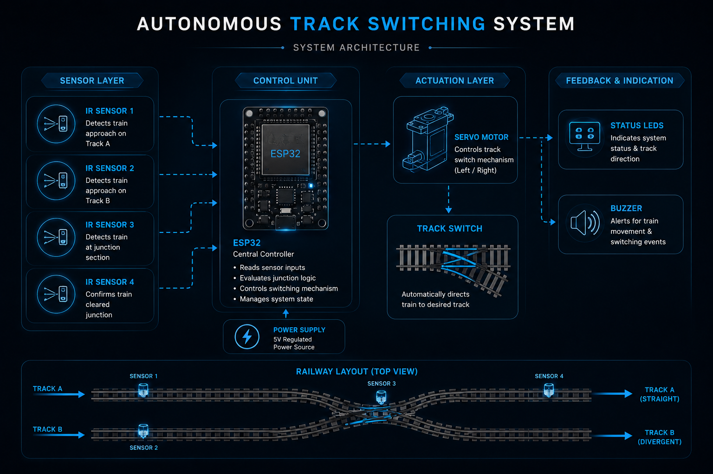

EMBEDDED AUTOMATION
An intelligent railway junction automation system designed to dynamically control train routing using sensor-based detection and real-time switching logic.
OVERVIEW
The Autonomous Track Switching System is an embedded railway automation project designed to intelligently control train routing at junction intersections. The system continuously monitors train movement using strategically positioned sensors and dynamically activates a switching mechanism to redirect trains toward the appropriate track path. By combining real-time detection, automated decision making, and embedded control logic, the project demonstrates how intelligent railway infrastructure can improve operational efficiency, reduce manual intervention, and enable scalable smart transportation systems.
PROBLEM
Modern railway systems require accurate and reliable junction management to ensure smooth train movement and prevent routing conflicts. Manual switching operations can introduce delays, synchronization challenges, and increased dependency on human monitoring. This project explores an automated embedded solution capable of detecting train movement, evaluating junction conditions, and autonomously controlling track switching mechanisms in real time. sensor-based control and embedded switching mechanisms.
ARCHITECTURE
The vital components used in the system are IR sensors for train detection, ESP32 as control unit, a motorized switching mechanism that dynamically changes track directions based on train movement.

CHALLENGES
Achieving reliable junction switching required precise sensor timing and synchronization between train detection events and servo-controlled track transitions. Additional challenges included minimizing false trigger conditions, maintaining switching stability, and ensuring consistent train traversal across junction paths.
RESULTS
FUTURE
The system can be optimized to include AI-based routing, remote monitoring systems, wireless communication module, advanced railway traffic coordination mechanisms.